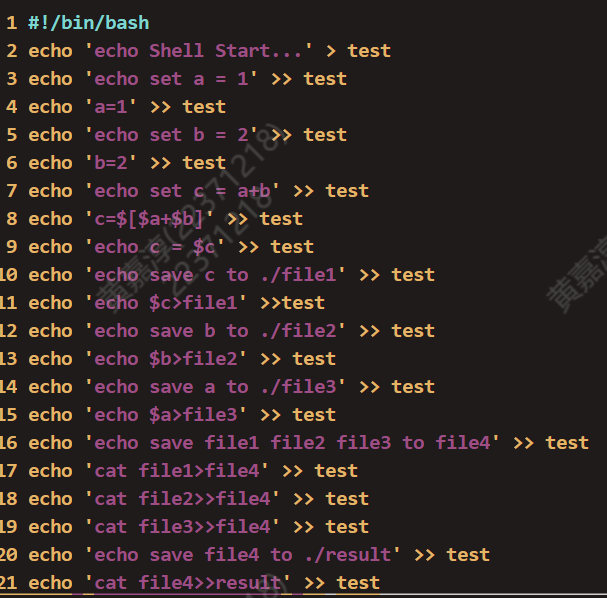

1.思考题
Thinking 0.1
思考下列有关 Git 的问题：
在前述已初始化的 ~/learnGit 目录下，创建一个名为 README.txt 的文件。执
行命令 git status > Untracked.txt1
2touch README.txt #创建文件
git status > Untracked.txt在 README.txt 文件中添加任意文件内容，然后使用 add 命令，再执行命令 git
status > Stage.txt。1
2
3echo hell > README.txt
git add README.txt
git status > Stage.txt提交 README.txt，并在提交说明里写入自己的学号。
1
git commit -m "22371218"
执行命令 cat Untracked.txt 和 cat Stage.txt，对比两次运行的结果，体会
README.txt 两次所处位置的不同
Untracked.txt内容位于分支 master
未跟踪的文件:
（使用 “git add <文件>…” 以包含要提交的内容）
README.txt
Untracked.txt提交为空，但是存在尚未跟踪的文件（使用 “git add” 建立跟踪）
Stage.txt内容
位于分支 master
要提交的变更：
（使用 “git restore –staged <文件>…” 以取消暂存）
新文件： README.txt未跟踪的文件:
（使用 “git add <文件>…” 以包含要提交的内容）
Stage.txt
Untracked.txt一开始未跟踪README.txt，出于未跟踪状态。提交之后是Staged状态
修改 README.txt 文件，再执行命令 git status > Modified.txt。
1
2echo hhhhhhh >> README.txt
git status > Modified.txt执行命令 cat Modified.txt，观察其结果和第一次执行 add 命令之前的 status 是
否一样，并思考原因。
Modified.txt内容位于分支 master
尚未暂存以备提交的变更：
（使用 “git add <文件>…” 更新要提交的内容）
（使用 “git restore <文件>…” 丢弃工作区的改动）
修改： README.txt未跟踪的文件:
（使用 “git add <文件>…” 以包含要提交的内容）
Modified.txt
Stage.txt
Untracked.txt不一样。未执行add之前，README.txt是未跟踪状态。而add之后，出于Staged状态。然后进行了commit，文件是UnModified状态。然后是再次修改文件，文件编程Modified状态
Thinking 0.2
仔细看看0.10，思考一下箭头中的 add the file 、stage the file 和commit 分别对应的是 Git 里的哪些命令呢？
add the file：对应的是git add 命令。将未追踪文件添加追踪并添加到暂存区
stage the file：对应的还是git add 命令，当文件有改动时，依旧可以通过git add将这个改动文件变更到staged状态
commit：对应的是git commit 命令，提交文件，文件变成Unmodified
Thinking 0.3
思考下列问题：
代码文件 print.c 被错误删除时，应当使用什么命令将其恢复？
1
git checkout -- print.c
代码文件 print.c 被错误删除后，执行了 git rm print.c 命令，此时应当
使用什么命令将其恢复？1
2git reset HEAD print.c
gitcheckout-- print.c如果无关文件
hello.txt已经被添加到暂存区，但不想删除此文件的前提下将其移出暂存区，1
git rm --cached hello.txt
Thinking0.4
思考下列有关 Git 的问题：
找到在 /home/22xxxxxx/learnGit 下刚刚创建的 README.txt 文件，若不存
在则新建该文件在文件里加入 Testing 1，git add，git commit，提交说明记为 1
模仿上述做法，把 1 分别改为 2 和 3，再提交两次
使用 git log 命令查看提交日志，看是否已经有三次提交，记下提交说明为3 的哈希值。
commit 15a9a39500dd07fac643e60c7ac70a43b3c6872a (HEAD -> master)
Author:
Date: Mon Mar 11 11:14:13 2024 +0800
3
commit 36373862ade2ef0d5ae0daaa0a8134c4a20c06a0
Author:
Date: Mon Mar 11 11:13:52 2024 +0800
2
commit 67caf92e60a6612b92e652f74e51763a331fdcfd
Author:
Date: Mon Mar 11 11:13:27 2024 +0800
1
确实有三次提交
进行版本回退。执行命令 git reset –hard HEAD^ 后，再执行 git log，观
察其变化。
log日志中没有了提交信息为3的记录
找到提交说明为 1 的哈希值，执行命令 git reset –hard
后，再执
行 git log，观察其变化。
此时commit2 和commit3都没有了，只有commit1
现在已经回到了旧版本，为了再次回到新版本，执行 git reset –hard
，再执行 git log，观察其变化。
hash用commit3的哈希值，git log之后 commit1,2,3都在
Thinking 0.5
执行如下命令, 并查看结果
echo first
fiest
echo second > output.txt
终端上无输出，output.txt文件中有”secend”
echo third > output.txt
终端上无输出，output.txt原文件被覆盖为”third”
echo forth >> output.txt
终端上无输出，”forth”追加到output.txt文件
Thinking 0.6
使用你知道的方法（包括重定向）创建下图内容的文件（文件命名为 test），将创建该文件的命令序列保存在 command 文件中，并将 test 文件作为批处理文件运行，将运行结果输出至 result 文件中。给出 command 文件和 result 文件的内容，并对最后的结果进行解释说明（可以从 test 文件的内容入手）. 具体实现的过程中思考下列问题: echo echo Shell Start 与 echo
echo Shell Start效果是否有区别; echo echo $c>file1与 echoecho $c>file1效果是否有区别.
command内容
result内容

第3行定义变量a=1，第5行定义b=2，第7行定义c=a+b=3
echo $c>file1使得file1内容是3，echo $b>file2 使得file2内容是2,echo $a>file3使得file3内容是1
然后同过三个cat命令使得file4内容是3 2 1
最后cat file4>>result 使得result是3 2 1
echo echo Shell Start 输出echo Shell Start
带`的输出Shell Start
echo echo $c>file1会在file1文件中写入echo
另一个没有
2.难点分析
路径问题
. 表示当前目录
..表示上级目录
chmod 和文件权限
-rwxrwxrwx 权限对应二进制数
通过chmod可以改变文件权限
git 相关
通过git add追踪，git commit 提交等等
相关版本回退

grep sed awk 管道的综合应用
在extra的搜寻ppid的实验
1 | elif [ ! -z $PID ]; then |
三个文本处理工具配合管道，找到自己进程的行号，再通过行号找到父进程，然后不断循环找到pid为0的进程
其中需要注意用grep -E 配合正则表达式限定搜索进程号，注意awk 单独输出pid或者ppid的那一列，通过sed 输出对应行号
shell脚本编写
变量定义“=”左右不能有空格[]
条件判断有空格
if while的语法学习
通配符使用
通过*.c或*.o 查找目录下的所有相关文件
3.实验体会
Lab0实验比较简单，但是细碎的内容比较多。shell脚本的语法类似c语言但是在格式上有很多自己的特性，需要特别记忆。Makefile的书写在Lab0考的比较简单，但是在网上看视频有很多进阶用法，学的时候记了很多没用上。grep sed awk的配合上管道处理文本很强大，语法细节也很多。
总的来说，由于上学期选修了系统编程课程，对Linux的相关操作有所了解，做起来比较得心应手。